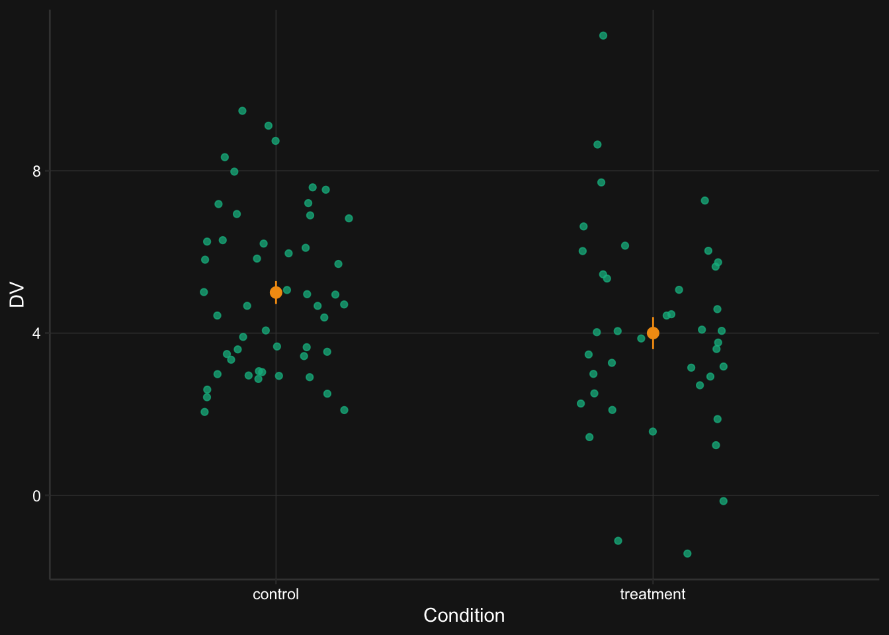
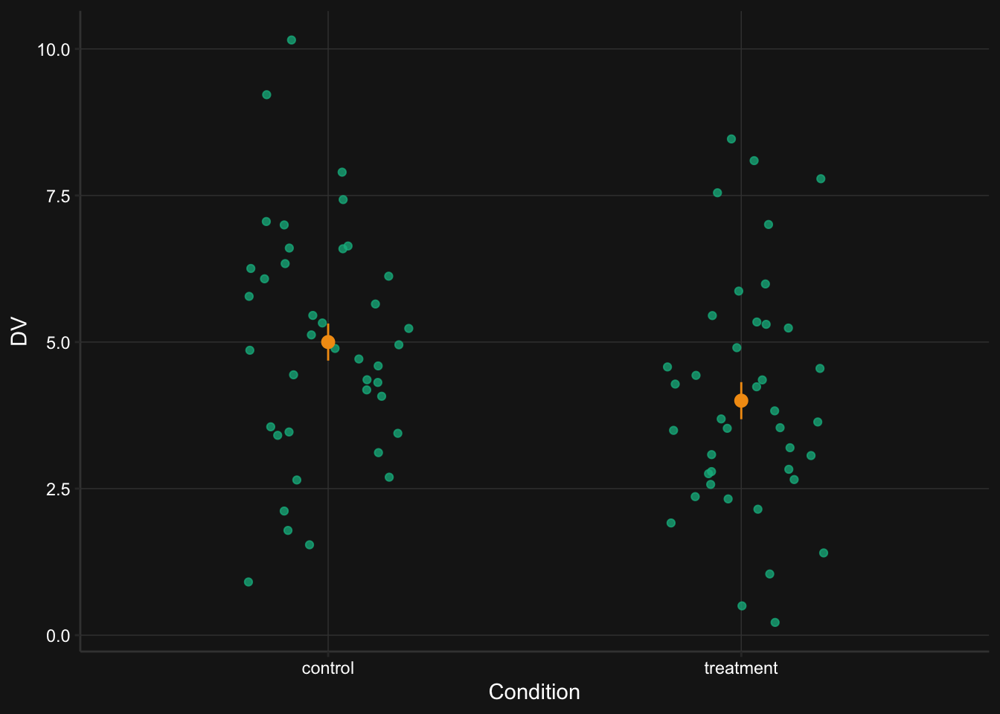
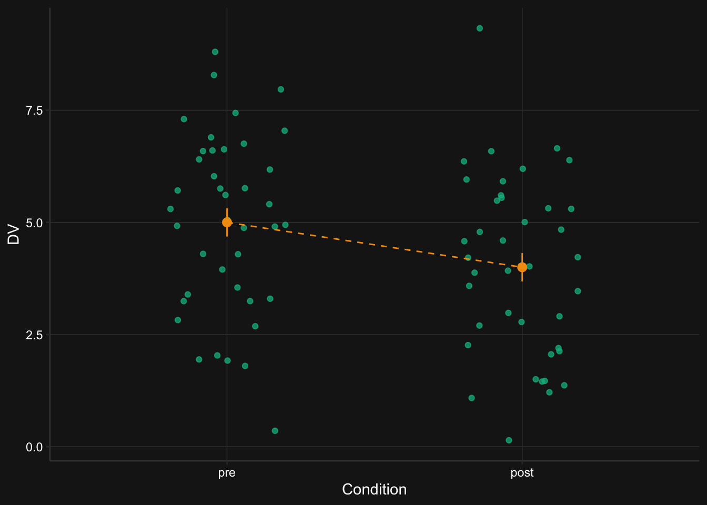
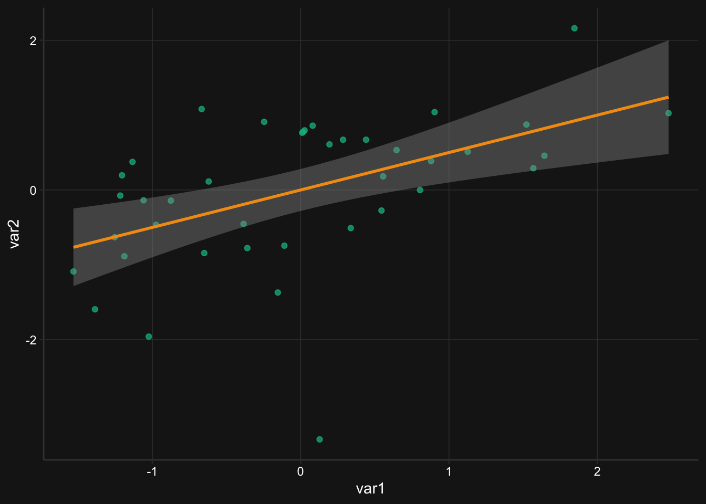
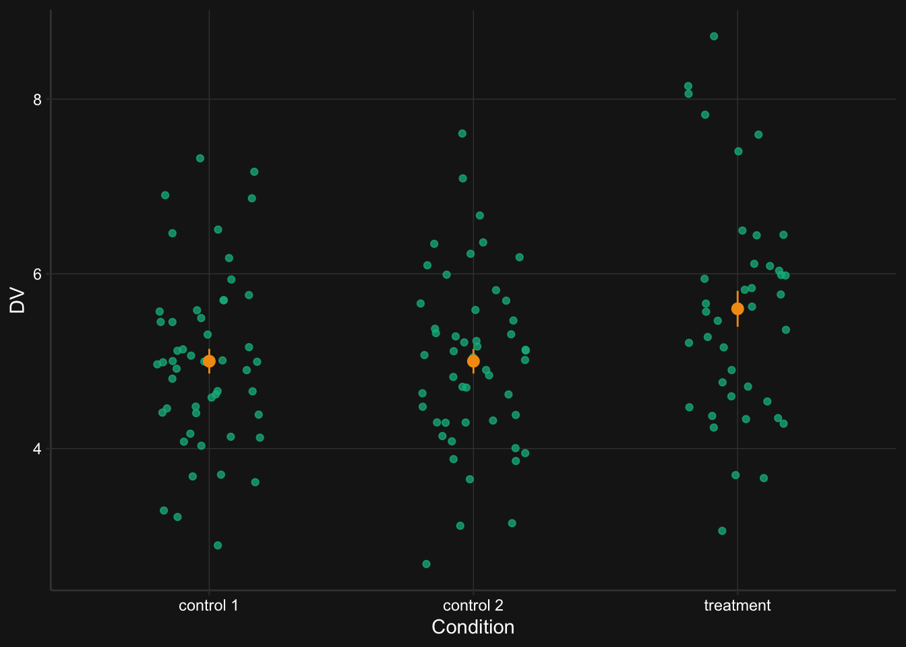
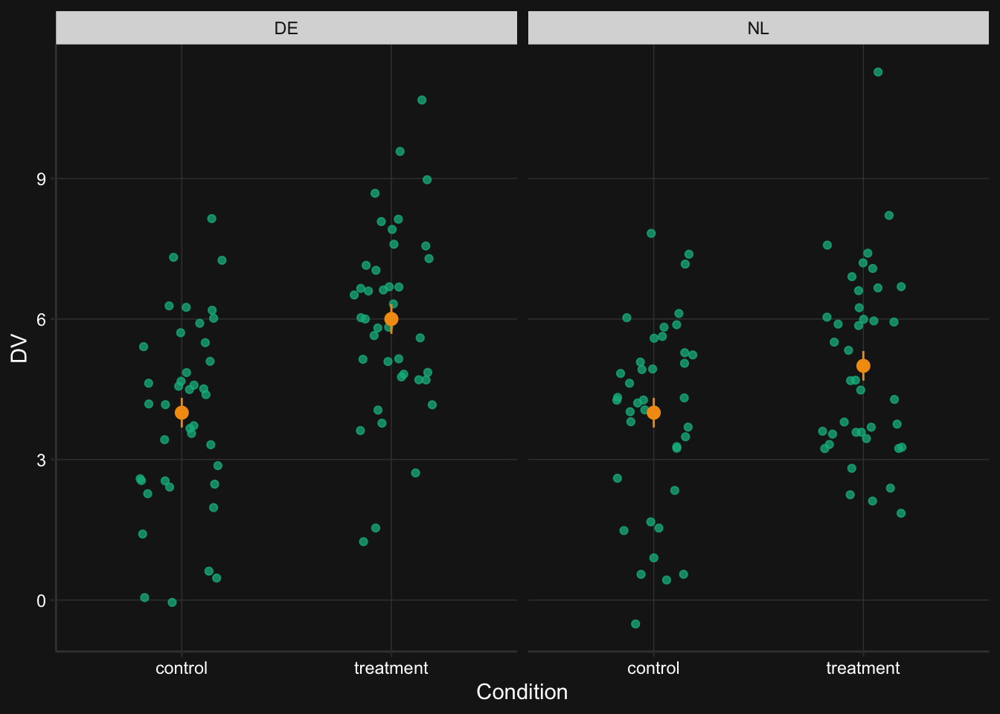

# Load packages
library(MASS)
library(tidyverse)
library(effectsize)
library(broom)
# Set global parameters
s <- 1000 # Number of loops in the power simulation
# Optional: Create color variables for the plots
green <- "#00B88D"
yellow <- "#f39c12"
off_white <- "#cccccc"Simulation-based power analyses
Introduction
Doing power analyses is hard. I know this from experience, both as a researcher and as a reviewer. As a researcher, I have found power analyses to be difficult because performing a good power analysis requires a thorough understanding of the (hypothesized) data. Understanding one’s data is often underestimated, I think. We’re very quick to design a study and start data collection, without often knowing what various aspects of our data will look like (e.g., likely correlations between measures, likely standard deviations). As a reviewer, I see that power analyses are difficult because of wrong ideas about what a power analysis actually means. The most common misconception I see is that researchers think they should power their study, rather than the set of analyses they will conduct. I also see a lot of power analyses conducted with G*Power, which sometimes looks fine, but oftentimes produces results I know to be wrong (usually involving interaction tests). So what to do?
My favorite way to run power analyses is via simulation. Simulation-based power analyses are more difficult and take longer to setup and run, but they’re more pedagogical. Simulations require you to understand your data because you have to define the exact parameters that define your data set (e.g., means, standard deviations, correlations). It also creates a very intuitive understanding of what power is: Power is simply counting how often you find the results you expect to find.
Still, running simulation-based power analyses might be too difficult for some. So in this blog post I present code to simulate data for a range of different scenarios.
Setup
Run the following code to get started. The most important package here is MASS. It contains a function called mvrnorm() that enables us to simulate data from a multivariate normal distribution. This means we’ll simulate data for scenarios where we have a continuous outcome. I really like this function for simulating data because it has an argument called empirical that you can set to TRUE, which causes your simulated data to have the exact properties you set (e.g., exactly a mean of 4). This is a great way to check out your simulated data and see if it makes sense.
We will use the tidyverse because we need to prepare the data after simulating it. mvrnorm() returns a matrix with each simulated variable as a column. This means we sometimes need to prepare the data so that we can perform the tests we want to run or for visualization purposes.
The effectsize package will be used to inspect the data by calculating standardized effect sizes. This will allow us to check whether the parameters are plausible.
Finally, we sometimes use the broom package to extract p-values from the statistical tests that we’ll run. This will be necessary to calculate the power because power is (usually) nothing more than the number of significant p-values divided by the number of tests we simulated data for. In a future post I might focus on Bayesian analyses, so we won’t be dealing with p-values then, although the logic will be the same.
Besides loading packages, we also set the s variable. The value of this variable will determine how many times we’ll simulate the data during the power analysis. The higher this number, the more accurate our power estimates will be.
With the setup out of the way, let’s cover our general approach to power analyses:
- Simulate the data with fixed properties
- Check the data to see if the data is plausible
- Run the tests we want to run on this data
- Repeat steps 1 to 3 many times, save the p-values, and calculate power
We’ll do this for various scenarios. In each scenario we start by defining the parameters. I’ll focus on providing means, standard deviations, and correlations, because those are usually the parameters we report in the results section, so I’m guessing most researchers will have some intuitions about what these parameters mean and whether the results are plausible.
The mvrnorm() function requires that we pass it the sample size, the means, and a variance-covariance matrix. The first two are easy to understand, but the variance-covariance may not be. It’s relatively straightforward to convert means, SDs, and correlations to a variance-covariance matrix, though. Variance is simply the standard deviation squared and the covariance is the product of the standard deviations of the two variables and their correlation. You’ll see in some scenarios below that this is how I construct the variance-covariance matrix.
Note that the result of each power analysis will be the power, and not the sample size needed to obtain a particular power. This is the same as calculating the post-hoc power in G*Power. If you want to figure out what the sample size is for a particular power (e.g., 80%) then you simply change the sample size parameter until you have the power you want.
One Sample t-test
The simplest scenario is where we want to simulate a set of normally distributed values and perform a one sample t-test. This requires that we set three parameters: a mean, a standard deviation, and a sample size. We give mvrnorm() the sample size (N), the mean (M), and the variance (SD^2). After simulating the data, we give the simulated data a column name and convert the matrix returned by mvrnorm() to a data frame.
# Parameters
M <- 0.75
SD <- 5
N <- 90
# Simulate once with empirical = TRUE
samples <- mvrnorm(N, mu = M, Sigma = SD^2, empirical = TRUE)
# Prepare data
colnames(samples) <- "DV"
data <- as_tibble(samples)The next step is to inspect the data to see whether the parameters are plausible. This can be done by converting the parameters to a standardized effect size and by visualizing the data.
# Calculate a standardized effect size
effect_size <- cohens_d(data$DV)
# Plot the simulated data
ggplot(data, aes(x = DV)) +
geom_histogram(fill = green, color = background_color) +
geom_vline(xintercept = M, linetype = "dashed", color = yellow)
The histogram roughly shows that we have a mean of 0.75 and a standard deviation of 5. We also calculated the Cohen’s d as a measure of the size of the effect. The size of this effect is equal to a Cohen’s d of 0.15.
Next is the analysis we want to power for—the one-sample t-test. The function for this test is t.test().
t.test(data$DV)To calculate the power, we repeat the analysis s times. Each time we store the p-value so that later we can calculate the proportion of significant results. Since we don’t need to inspect the data each time, we skip the data preparation step and use the samples returned by mvrnorm() immediately in t.test() using R’s matrix notation (if you want, you can also prepare the data each time, if you find that easier to understand).
# Create a vector to the store p-values in
p_values <- vector(length = s)
# Loop s times
for (i in 1:s) {
# Simulate
samples <- mvrnorm(N, mu = M, Sigma = SD^2)
# Run test
test <- t.test(samples[, 1])
# Extract p-value
p_values[i] <- test$p.value
}
# Calculate power
power <- sum(p_values <= .05) / s * 100With the current parameters (N = 90, Cohen’s d = 0.15), we obtain a power of 29.9%. The power is simply how often we find a significant result, divided by the number of times we looped, multiplied by 100 to give a percentage. You can adjust the sample size parameter and re-run the code until you know which sample size gives you the desired power. You might also want to run the loop a few times to see how consistent your results are (if the results are inconsistent, increase the number of loops by increasing the value of s).
Welch’s Two Sample t-test
The next scenario is one in which there are two groups (e.g., a control condition and a treatment condition) and a single DV. Even in this simple scenario there are already several variations that are important to consider. Do we assume equal variances between groups? Do we assume equal samples sizes? Is the design between or within-subjects? We’ll start with assuming unequal variances between the two groups. This means we’ll run a Welch’s two sample t-test. To make it extra fun, we’ll also simulate unequal sample sizes.
If we are interested in a between-subjects design where we assume both unequal variances and samples sizes, we can use the code from the previous scenario and simply run it twice, once for each group. After simulating the data, we convert the simulated matrix of each group to a data frame, add a column indicating the group, and merge the two groups into a single data frame.
# Parameters
M_control <- 5
M_treatment <- 4
SD_control <- 2
SD_treatment <- 2.5
N_control <- 50
N_treatment <- 40
# Simulate once with empirical = TRUE
control <- mvrnorm(N_control, mu = M_control, Sigma = SD_control^2,
empirical = TRUE)
treatment <- mvrnorm(N_treatment, mu = M_treatment, Sigma = SD_treatment^2,
empirical = TRUE)
# Prepare data
colnames(control) <- "DV"
colnames(treatment) <- "DV"
control <- control %>%
as_tibble() %>%
mutate(condition = "control")
treatment <- treatment %>%
as_tibble() %>%
mutate(condition = "treatment")
data <- bind_rows(control, treatment)Next, we inspect the data by calculating a Cohen’s d and visualizing the results.
# Calculate a standardized effect size
effect_size <- cohens_d(DV ~ condition, data = data, pooled_sd = FALSE)
# Visualize the data
ggplot(data, aes(x = condition, y = DV)) +
geom_jitter(width = .2, alpha = .75, color = green) +
stat_summary(color = yellow) +
labs(x = "Condition")
The difference between the two groups is equal to a Cohen’s d of 0.44.
To run a Welch’s two-sample t-test, we again use the t.test() function. R by default does not assume equal variances, so the default is a Welch’s two sample t-test.
t.test(DV ~ condition, data = data)The power analysis looks as follows:
# Create an empty vector to store the p-values in
p_values <- vector(length = s)
# Loop
for (i in 1:s) {
# Simulate
control <- mvrnorm(N_control, mu = M_control, Sigma = SD_control^2)
treatment <- mvrnorm(N_treatment, mu = M_treatment, Sigma = SD_treatment^2)
# Run test
test <- t.test(control[, 1], treatment[, 1])
# Extract p-value
p_values[i] <- test$p.value
}
# Calculate power
power <- sum(p_values <= .05) / s * 100This produces a power of 51% with the current parameters.
Two Sample t-test
Instead of assuming unequal variances, we can also assume equal variances and perform a two sample t-test. You could adapt the previous scenario by setting the parameters such that the variance in each group is identical, but let’s do something different in this scenario. In addition, let’s assume that the sample sizes in each group are equal. This means we can simulate the data using a slightly different approach. First, we’ll only need 4 parameters. Second, we don’t need to separately simulate the data for each group. We can instead use a single mvrnorm() call and provide it with the correct variance-covariance matrix. The crucial bit is to only set the variances and set the covariances to 0. If we do it this way, we do need to adjust how we prepare the data. mvnnorm() returns a matrix that, when converted to a data frame, results in a wide data frame. That is, the DV of each group is stored in separate columns. This is not tidy. We therefore restructure the data to make it long.
# Parameters
M_control <- 5
M_treatment <- 4
SD <- 2
N <- 40
# Prepare parameters
mus <- c(M_control, M_treatment)
Sigma <- matrix(nrow = 2, ncol = 2,
c(
SD^2, 0,
0, SD^2
)
)
# Simulate once with empirical = TRUE
samples <- mvrnorm(N, mu = mus, Sigma = Sigma, empirical = TRUE)
# Prepare data
colnames(samples) <- c("control", "treatment")
data <- as_tibble(samples)
data_long <- pivot_longer(data, cols = everything(), names_to = "condition",
values_to = "DV")We inspect the data with the code from before, substituting data with data_long.
# Calculate a standardized effect size
effect_size <- cohens_d(DV ~ condition, data = data_long)
# Visualize the data
ggplot(data_long, aes(x = condition, y = DV)) +
geom_jitter(width = .2, alpha = .75, color = green) +
stat_summary(color = yellow) +
labs(x = "Condition")
We see a difference between the two conditions with a Cohen’s d of 0.5.
This time we run a two sample t-test with equal variances assumed.
t.test(DV ~ condition, data = data_long, var.equal = TRUE)As before, the power analysis code is as follows:
# Create an empty vector to store p-values in
p_values <- vector(length = s)
# Loop
for (i in 1:s) {
# Simulate
samples <- mvrnorm(N, mu = mus, Sigma = Sigma)
# Run test
test <- t.test(samples[, 1], samples[, 2], var.equal = TRUE)
# Extract p-value
p_values[i] <- test$p.value
}
# Calculate power
power <- sum(p_values <= .05) / s * 100This produces a power of 59.1% with the current parameters.
Paired t-test
A paired t-test is appropriate when we have, for example, data from two groups and we have the same participants in both groups. In other words, the observations belonging to the same participant are likely to be correlated. To calculate power for this scenario, we need to set a correlation parameter. This, in turn, requires that we change the variance-covariance matrix. We need to set the covariances to be equal to the squared standard deviation multiplied by the correlation (remember that a covariance is the standard deviation of one group times the standard deviation of the other group times the correlation between the two).
# Parameters
M_pre <- 5
M_post <- 4
SD <- 2
N <- 40
r <- 0.75
# Prepare parameters
mus <- c(M_pre, M_post)
Sigma <- matrix(ncol = 2, nrow = 2,
c(
SD^2, SD^2 * r,
SD^2 * r, SD^2
)
)
# Simulate once with empirical = TRUE
samples <- mvrnorm(N, mu = mus, Sigma = Sigma, empirical = TRUE)
# Prepare data
colnames(samples) <- c("pre", "post")
data <- as_tibble(samples)
data_long <- pivot_longer(data, cols = everything(),
names_to = "condition", values_to = "DV") %>%
mutate(condition = fct_relevel(condition, "pre"))Let’s plot the means in each group, with a line between the two points representing the means to signify that this data was measured within-subjects. We also calculate another Cohen’s d to get an impression of the standardized effect size.
# Calculate a standardized effect size
effect_size <- cohens_d(DV ~ condition, data = data_long, paired = TRUE)
# Visualize the data
ggplot(data_long, aes(x = condition, y = DV, group = 1)) +
geom_jitter(width = .2, alpha = .75, color = green) +
stat_summary(color = yellow, geom = "line", linetype = 2) +
stat_summary(color = yellow) +
labs(x = "Condition")
The difference between the two groups is equal to a Cohen’s d of 0.71.
Run the paired t-test with t.test() and set paired to TRUE. I generally favor long data frames, so that’s the data frame I use here to run the paired t-test. In the power analysis, I use the wide version to minimize the code (and speed up the power analysis).
t.test(DV ~ condition, data = data_long, paired = TRUE)The power analysis for this analysis looks as follows:
# Create an empty vector to store the p-values in
p_values <- vector(length = s)
# Loop
for (i in 1:s) {
# Simulate
samples <- mvrnorm(N, mu = mus, Sigma = Sigma)
# Run test
test <- t.test(samples[, 1], samples[, 2], paired = TRUE)
# Extract p-value
p_values[i] <- test$p.value
}
# Calculate power
power <- sum(p_values <= .05) / s * 100This produces a power of 99.2% with the current parameters.
Correlation
To power for a single correlation, we can actually use most of the code from the previous scenario. The only difference is that we probably don’t care about mean differences, so we can set those to 0. If we also assume equal variances, we only need a total of 4 parameters.
# Parameters
M <- 0
SD <- 1
N <- 40
r <- 0.5
# Prepare parameters
mus <- c(M, M)
Sigma <- matrix(ncol = 2, nrow = 2,
c(
SD^2, SD^2 * r,
SD^2 * r, SD^2
)
)
# Simulate once with empirical = TRUE
samples <- mvrnorm(N, mu = mus, Sigma = Sigma, empirical = TRUE)
# Prepare data
colnames(samples) <- c("var1", "var2")
data <- as_tibble(samples)This time, we plot the data with a scatter plot—a suitable graph for displaying the relationship between two numeric variables.
# Visualize the data
ggplot(data, aes(x = var1, y = var2)) +
geom_point(alpha = .75, color = green) +
geom_smooth(method = "lm", color = yellow)
To perform the statistical test, we run cor.test().
cor.test(data$var1, data$var2)The power analysis:
# Create an empty vector to store the p-values in
p_values <- vector(length = s)
# Loop
for (i in 1:s) {
# Simulate
samples <- mvrnorm(N, mu = mus, Sigma = Sigma)
# Run test
test <- cor.test(samples[, 1], samples[, 2])
# Extract p-value
p_values[i] <- test$p.value
}
# Calculate power
power <- sum(p_values <= .05) / s * 100This produces a power of 91.9% with the current parameters.
2 t-tests
It gets more interesting when you have three groups that you want to compare. For example, imagine a study with two control conditions and a treatment condition. You probably want to compare the treatment condition to the two control conditions. What is the appropriate analysis in this case? Well, that probably depends on who you ask. Someone might suggest performing an ANOVA to look at the omnibus test, followed up by something like a Tukey HSD. Or maybe you can do an ANOVA/regression in which you compare the treatment condition to the two control conditions combined, using the proper contrast. Both don’t make sense to me. In the former case, I don’t understand why you would first do an omnibus test if you’re going to follow it up with more specific analyses anyway and in the latter case you run into the problem of not knowing whether your treatment condition differs from both conditions, which you are likely to predict. Instead, I think the best course of action is to just run two t-tests.
The big thing to take away from this scenario is that we should power for finding a significant effect on both tests. We don’t power for the ‘design’ of the study or a single analysis. No, our hypotheses our only confirmed if we find significant differences between the treatment condition and both control conditions, which we test with two t-tests.
Let’s further assume that the variance in the treatment condition is larger than the variance in the control conditions (which is plausible). Let’s also assume some dropout in the treatment condition (also possibly plausible). This means we should test the differences with Welch’s two sample t-tests.
# Parameters
M_control1 <- 5
M_control2 <- 5
M_treatment <- 5.6
SD_control1 <- 1
SD_control2 <- 1
SD_treatment <- 1.3
N_control1 <- 50
N_control2 <- 50
N_treatment <- 40
# Simulate once
control1 <- mvrnorm(N_control1, mu = M_control1, Sigma = SD_control1^2,
empirical = TRUE)
control2 <- mvrnorm(N_control2, mu = M_control2, Sigma = SD_control2^2,
empirical = TRUE)
treatment <- mvrnorm(N_treatment, mu = M_treatment, Sigma = SD_treatment^2,
empirical = TRUE)
# Prepare data
colnames(control1) <- "DV"
colnames(control2) <- "DV"
colnames(treatment) <- "DV"
control1 <- control1 %>%
as_tibble() %>%
mutate(condition = "control 1")
control2 <- control2 %>%
as_tibble() %>%
mutate(condition = "control 2")
treatment <- treatment %>%
as_tibble() %>%
mutate(condition = "treatment")
data <- bind_rows(control1, control2, treatment)We again inspect the data by visualizing it and calculating standardized effect sizes (two this time; although they are actually identical with the current parameters).
# Calculate standardized effect sizes
effect_size1 <- cohens_d(DV ~ condition, pooled_sd = FALSE,
data = filter(data, condition != "control 2"))
effect_size2 <- cohens_d(DV ~ condition, pooled_sd = FALSE,
data = filter(data, condition != "control 1"))
# Visualize the data
ggplot(data, aes(x = condition, y = DV)) +
geom_jitter(width = .2, alpha = .75, color = green) +
stat_summary(color = yellow) +
labs(x = "Condition")No summary function supplied, defaulting to `mean_se()`
The treatment condition differs from the two control conditions with a difference equal to a Cohen’s d of -0.52.
The statistical analysis consists of two Welch’s two sample t-tests:
t.test(DV ~ condition, data = filter(data, condition != "control 1"))
t.test(DV ~ condition, data = filter(data, condition != "control 2"))The power analysis is now more interesting because we want to have enough power to find a significant effect on both t-tests. So that means we’ll store the p-values of both tests and then count how often we find a p-value below .05 for both tests.
# Create two empty vectors to store the p-values in
p_values1 <- vector(length = s)
p_values2 <- vector(length = s)
# Loop
for (i in 1:s) {
# Simulate
control1 <- mvrnorm(N_control1, mu = M_control1, Sigma = SD_control1^2)
control2 <- mvrnorm(N_control2, mu = M_control2, Sigma = SD_control2^2)
treatment <- mvrnorm(N_treatment, mu = M_treatment, Sigma = SD_treatment^2)
# Run tests
test1 <- t.test(control1[, 1], treatment[, 1])
test2 <- t.test(control2[, 1], treatment[, 1])
# Extract p-values
p_values1[i] <- test1$p.value
p_values2[i] <- test2$p.value
}
# Calculate power
power <- sum(p_values1 <= .05 & p_values2 <= .05) / s * 100The resulting power is 54.7%. Note that this is very different from the power of finding a significant effect of only one of the two tests; which would be equal to a power of 78.6%. An important lesson to learn here is that with multiple tests, your power may quickly go down, depending on the power for each individual test. You can also calculate the overall power if you know the power of each individual test. If you know you have 80% power for each of two tests, then the overall power will be 80% * 80% = 64%. This only works if your analyses are completely independent, though.
Regression (2 x 2 interaction)
Next, let’s look at an interaction effect between two categorical predictors in a regression. Say we have a control condition and a treatment condition and we ran the study in the Netherlands and in Germany. With such a design there is the possibility of an interaction effect. Maybe there’s a difference between the control condition and the treatment condition in the Netherlands but not in Germany, or perhaps it is completely reversed, or perhaps only weakened. The exact pattern determines the strength of the interaction effect. If an effect in one condition completely flips in another condition, we have the strongest possible interaction effect (i.e., a crossover interaction). If the effect is merely weaker in one condition rather than another, then we only have a weak interaction effect (i.e., an attenuated interaction effect).
Not only does the expected pattern of the interaction determine the expected effect size of the interaction, it also affects which analyses you should run. Finding a significant interaction effect does not mean that the interaction effect you found actually matches what you hypothesized. If you expect a crossover interaction, but you only find an attenuated interaction, you’re wrong. And vice versa as well. The issue is more complicated when you expect an interaction in which the effect is present is one condition but absent in another. You then should test whether the effect is indeed absent, which is a bit tricky with frequentist statistics (although see this). Hypothesizing a crossover interaction is probably the easiest. I think you don’t even need to run an interaction test in that case. Instead, you can just run two t-tests and test whether both are significant, with opposite signs.
In this scenario, let’s cover what is possibly the most common interaction in psychology—an attenuated interaction with the effect being present in both conditions, but smaller in one than in the other. This means we want a significant difference between the two conditions in each country, as well as a significant interaction effect.
# Parameters
M_control_NL <- 4
M_control_DE <- 4
M_treatment_NL <- 5
M_treatment_DE <- 6
SD <- 2
N <- 40
# Prepare parameters
mus <- c(M_control_NL, M_control_DE, M_treatment_NL, M_treatment_DE)
Sigma <- matrix(ncol = 4, nrow = 4,
c(
SD^2, 0, 0, 0,
0, SD^2, 0, 0,
0, 0, SD^2, 0,
0, 0, 0, SD^2
)
)
# Simulate once
samples <- mvrnorm(N, mu = mus, Sigma = Sigma, empirical = TRUE)
# Prepare data
colnames(samples) <- c("control_NL", "control_DE", "treatment_NL", "treatment_DE")
data <- samples %>%
as_tibble() %>%
pivot_longer(
cols = everything(),
names_to = c("condition", "country"),
names_sep = "_",
values_to = "DV"
)When it comes to interaction effects, it’s definitely a good idea to visualize the data. In addition, we calculate the effect size of the difference between the control and treatment condition for each country.
# Calculate effect size per country
effect_size_NL <- cohens_d(DV ~ condition, data = filter(data, country == "NL"))
effect_size_DE <- cohens_d(DV ~ condition, data = filter(data, country == "DE"))
# Visualize the interaction effect
ggplot(data, aes(x = condition, y = DV)) +
geom_jitter(width = .2, alpha = .75, color = green) +
stat_summary(color = yellow) +
facet_grid(~ country) +
labs(x = "Condition")No summary function supplied, defaulting to `mean_se()`
No summary function supplied, defaulting to `mean_se()`
The graph shows that the difference between the control and treatment condition indeed seems to be larger in Germany than in the Netherlands. In the Netherlands, the effect size is equal to a Cohen’s d of -0.5. In Germany, it’s -1.
A regression analysis can be used to test the interaction effect and whether the effect is present in each country. We do need the run the regression twice in order to get the effect of treatment in each country. By default, Germany is the reference category (DE comes before NL). So if we switch the reference category to NL, we get the effect of treatment in the Netherlands.
# Regression with DE as the reference category
model_DE <- lm(DV ~ condition * country, data = data)
summary(model_DE)
# Regression with NL as the reference category
data <- mutate(data, country = fct_relevel(country, "NL"))
model_NL <- lm(DV ~ condition * country, data = data)
summary(model_NL)Our interest is in the two treatment effects and the interaction effect (which is the same in both models). This means that we want to save 3 p-values in the power analysis.
# Create three empty vectors to store the p-values in
p_values_NL <- vector(length = s)
p_values_DE <- vector(length = s)
p_values_interaction <- vector(length = s)
# Loop
for (i in 1:s) {
# Simulate
samples <- mvrnorm(N, mu = mus, Sigma = Sigma)
# Prepare data
colnames(samples) <- c("control_NL", "control_DE", "treatment_NL",
"treatment_DE")
data <- samples %>%
as_tibble() %>%
pivot_longer(
cols = everything(),
names_to = c("condition", "country"),
names_sep = "_",
values_to = "DV"
)
# Run tests
model_DE <- lm(DV ~ condition * country, data = data)
data <- mutate(data, country = fct_relevel(country, "NL"))
model_NL <- lm(DV ~ condition * country, data = data)
# Extract p-values
model_NL_tidy <- tidy(model_NL)
model_DE_tidy <- tidy(model_DE)
p_values_NL[i] <- model_NL_tidy$p.value[2]
p_values_DE[i] <- model_DE_tidy$p.value[2]
p_values_interaction[i] <- model_NL_tidy$p.value[4]
}
# Calculate power
power <- sum(p_values_NL <= .05 & p_values_DE <= .05 &
p_values_interaction <= .05) / s * 100The overall power for this scenario is 9.6%. If you instead only look at the power of the interaction test, you get a power of 32.3%. The difference shows that it matters whether you follow up your interaction test with the analyses that confirm the exact pattern of the interaction test. Also note that these analyses are not independent, so it’s not straightforward to calculate the overall power. Simulation makes it relatively easy.
Conclusion
In this post I presented code to perform a simulated-based power analysis for several scenarios. In the future I hope to expand on the scenarios, but I think the scenarios included so far already reveal a few interesting things. In some cases, it’s rather trivial to simulate the data. The mvrnorm() function works wonders for simulating the data by letting you set empirical to TRUE, thereby allowing you to inspect the simulated data. More importantly, though, I think that simulation-based power analyses are pedagogical. It takes the magic out of power analyses because power is nothing more than counting how often you find the significant results you expect to find. Not only that, the simulation approach also means that if you can simulate the data, you can calculate the power. Maybe that’s easier said than done, but that’s where my example code comes in. Hopefully it provides you with the code you can adapt to your own scenario so you can run the correct power analysis.
This post was last updated on 2022-04-07.